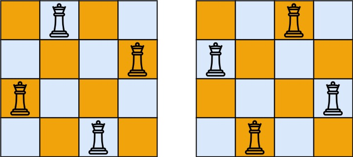

题面
按照国际象棋的规则，皇后可以攻击与之处在同一行或同一列或同一斜线上的棋子。
n 皇后问题 研究的是如何将 n 个皇后放置在 n×n 的棋盘上，并且使皇后彼此之间不能相互攻击。
给你一个整数 n ，返回所有不同的 n 皇后问题 的解决方案。
每一种解法包含一个不同的 n 皇后问题 的棋子放置方案，该方案中 'Q' 和 '.' 分别代表了皇后和空位。
示例 1：

输入： n = 4
输出：[[".Q..","...Q","Q...","..Q."],["..Q.","Q...","...Q",".Q.."]]
解释： 如上图所示，4 皇后问题存在两个不同的解法。示例 2：
输入： n = 1
输出：[["Q"]]提示：
1 <= n <= 9
思路
- 本质是全排列（第 55 题）的变体：每行选一个列号，不能冲突
- 不是在网格上"走路"（和单词搜索不同），而是逐行做选择
关键观察
每一行必须放恰好一个皇后，所以问题变成：第 0 行放哪列？第 1 行放哪列？……这就是全排列——每行选一个列号，再加上斜线的限制。
和全排列的对比
# 全排列：每个位置选一个数
def dfs(path):
if len(path) == n:
收集
for i in nums:
if i in path: continue # 不能重复选
选 i，递归，撤销
# N 皇后：每行选一个列
def dfs(row):
if row == n:
收集
for col in range(n):
if col in cols or ...: # 同列、同斜线不能选
continue
放皇后，递归，撤销冲突检测 三个条件
皇后攻击同行、同列、两条斜线。行已经天然不冲突（每行只放一个），所以只检查：
- 同列：
col in cols - `\` 斜线：
(row - col) in diag1（同一条\斜线上row - col值相同） - `/` 斜线：
(row + col) in diag2（同一条/斜线上row + col值相同）
col0 col1 col2 col3 col0 col1 col2 col3
row0: 0 -1 -2 -3 | row0: 0 1 2 3
row1: 1 0 -1 -2 | row1: 1 2 3 4
row2: 2 1 0 -1 | row2: 2 3 4 5
row3: 3 2 1 0 | row3: 3 4 5 6
row-col（\ 斜线） row+col（/ 斜线）输出格式转换
cols 记录每行放在哪一列（如 [1, 3, 0, 2]），在收集时转成字符串：
# 比如 n=4, col=2 → "..Q."
"." * col + "Q" + "." * (n - col - 1)代码实现
class Solution:
def solveNQueens(self, n: int) -> List[List[str]]:
self.res = []
cols = list()
diag1 = list()
diag2 = list()
def dfs(row):
if row == n:
board = []
for col in cols:
string_b = '.' * col + 'Q' + (n - col - 1) * '.'
board.append(string_b)
self.res.append(board[:])
return
for col in range(n):
if col in cols or (row - col) in diag1 or (row + col) in diag2:
continue
cols.append(col)
diag1.append((row - col))
diag2.append((row + col))
dfs(row + 1)
cols.pop()
diag1.pop()
diag2.pop()
dfs(0)
return self.res- 易错点：
- 斜线用 `row - col` 和 `row + col` 判断：不是坐标对，是一个整数值。同一条斜线上这个值相同
- 三个 list 都要回溯：
cols.pop()、diag1.pop()、diag2.pop()缺一不可 - 输出是字符串拼接：字符串不可变，不能
s[i] = 'Q'，要用"." * col + "Q" + "." * (n-col-1) - 全用 list 而不是 set：n 最大为 9，list 的
in查找完全够用，写法统一不容易搞混
- 复杂度：时间 O(n!)（每行可选列数递减），空间 O(n)（递归深度 + 三个 list）